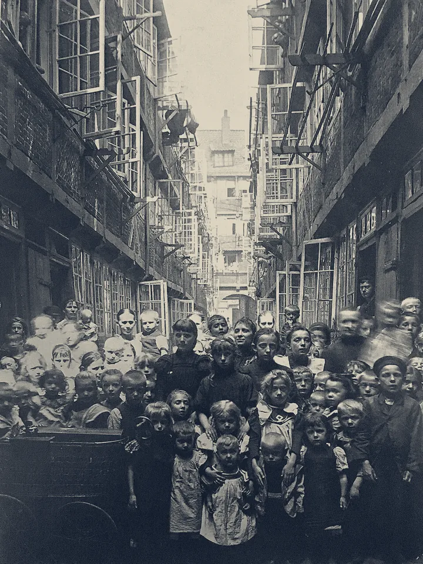
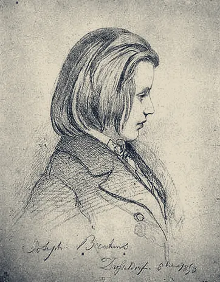
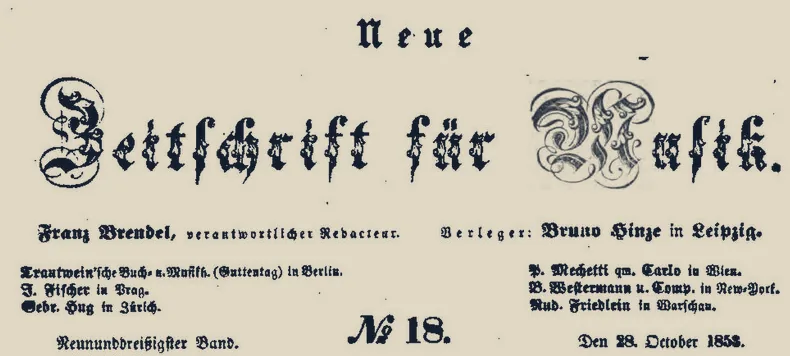
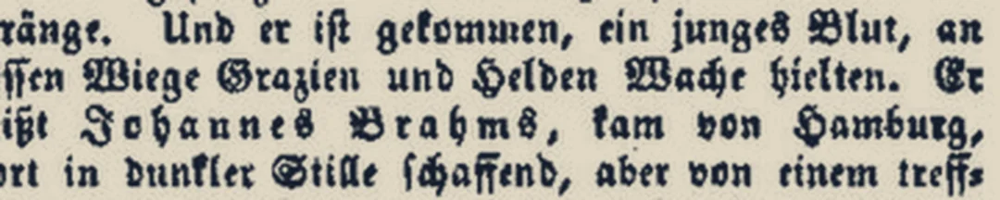
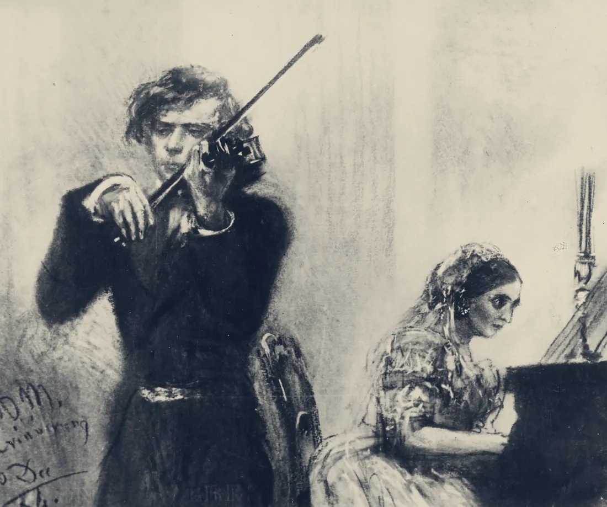
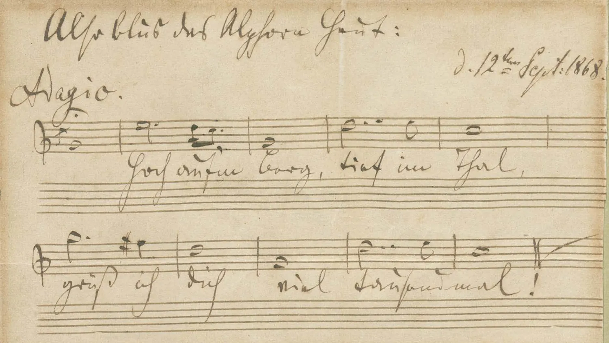
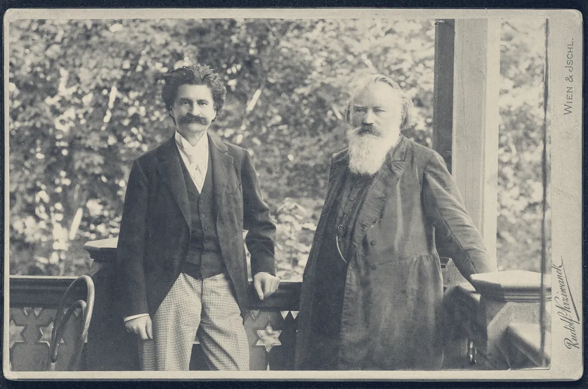
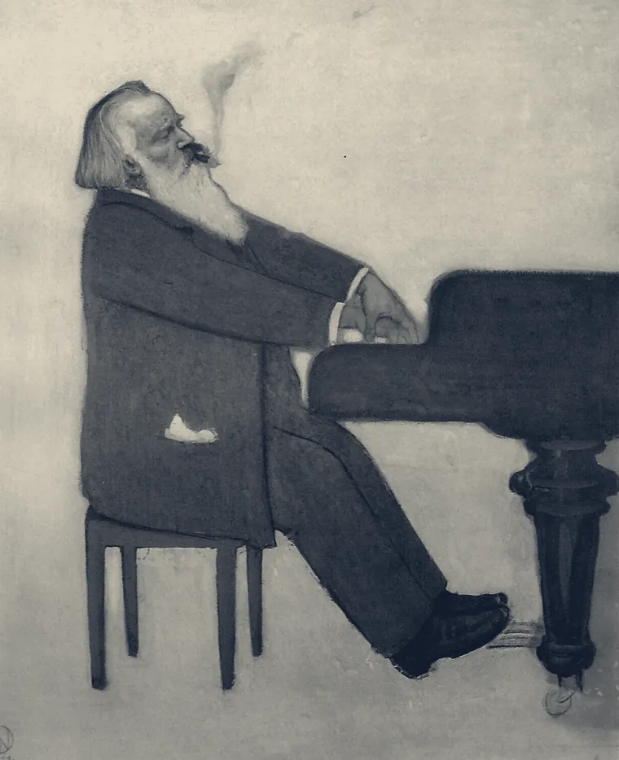
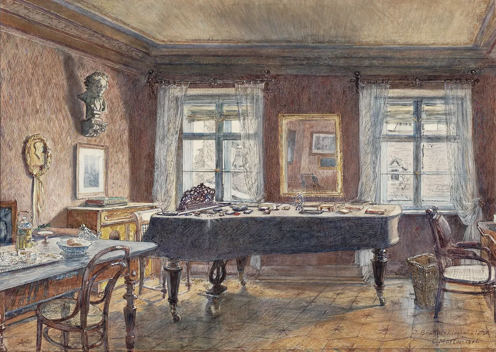
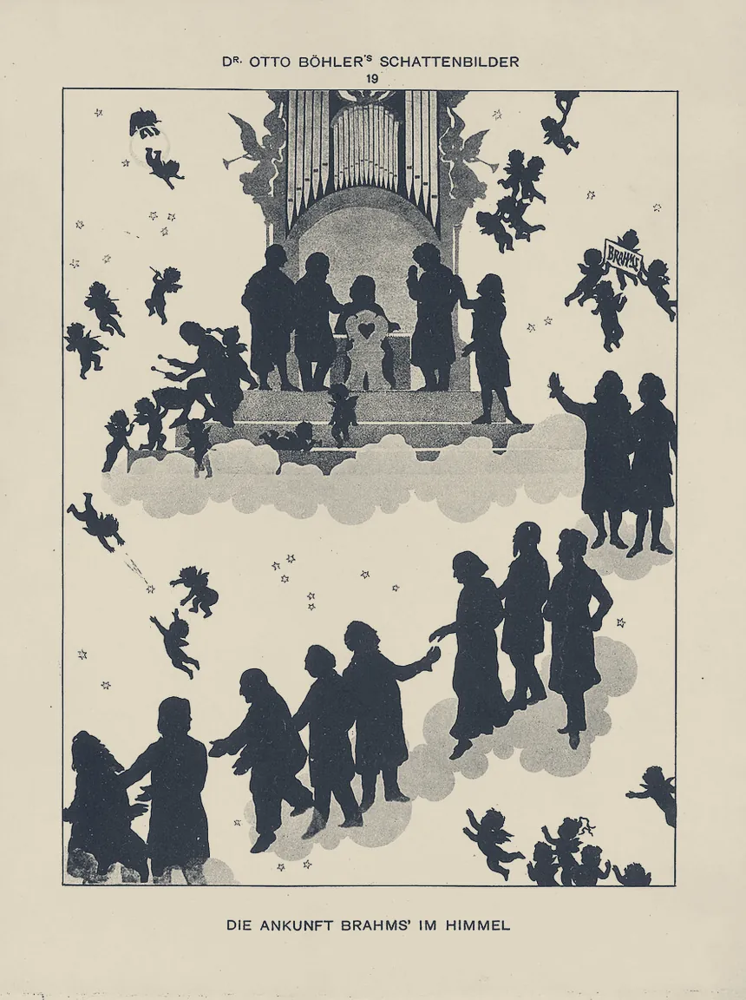

Thème et variations
Johannes
Hambourg, 7 mai 1833 · Vienne, 3 avril 1897
Toute la musique s’écrit sur cinq lignes. On les trace d’un seul geste, avec une plume à cinq becs qu’on appelle un rastral. Voici une vie racontée en variations sur ces cinq lignes. Effleurez la portée. Activez le son pour l’entendre. Chaque anecdote est marquée d’un point d’orgue. les rassemble. Onze interprétations jalonnent les variations, des rouleaux de 1905 à aujourd’hui.
AllegroSonate pour piano n° 1, op. 1
Var. I1833
Le port
Johannes Brahms naît le 7 mai 1833 à Hambourg, au numéro 24 du Specksgang, dans le Gängeviertel, un dédale de ruelles serrées près du port.
La maison, photographiée en 1891, a été détruite par les bombardements de 1943.
Son père, Johann Jakob, joue du cor dans la fanfare de la garde civique, puis de la contrebasse. Sa mère, Christiane, est couturière. Elle a dix-sept ans de plus que son mari.

À sept ans, l’enfant prend ses premières leçons de piano avec Otto Cossel. Eduard Marxsen lui enseigne ensuite le piano et la composition, sans jamais lui demander d’argent.
On a longtemps raconté qu’il jouait la nuit dans les tavernes du port. Les historiens n’y croient plus guère : à son âge, il n’avait pas le droit d’y entrer, et son père ne l’aurait pas permis. Il joue dans des salles de danse, dans des jardins d’été, au Thalia-Theater, et rapporte l’argent à la maison.
Allegro maestosoSonate pour piano n° 3, op. 5
Var. II1853
Neue BahnenChemins nouveaux
Au printemps 1853, Brahms a vingt ans. Il part en tournée avec le violoniste hongrois Ede Reményi.
À Hanovre, il rencontre Joseph Joachim, qui restera son ami. Il passe chez Liszt à Weimar, puis voyage le long du Rhin.

Le 30 septembre, il se présente chez Robert et Clara Schumann, à Düsseldorf, et se met au piano. Leur fille Marie se souviendra que Schumann l’a interrompu après quelques mesures.
„Bitte, warten Sie einen Augenblick, dazu muß ich meine Frau rufen.“
« Attendez un instant, je vous prie. Pour cela, il faut que j’appelle ma femme. »
Clara entre.
Ici commence une liaison
En musique, une liaison est la courbe qui relie plusieurs notes. Celle-ci court le long de la page, en or, aussi longtemps que durera leur amitié.
Le 28 octobre, Schumann publie dans la Neue Zeitschrift für Musik un article intitulé « Neue Bahnen ». Il y présente le jeune homme au monde musical.


« Et il est venu, ce jeune sang dont les Grâces et les Héros ont veillé le berceau. Il s’appelle Johannes Brahms, il vient de Hambourg, où il créait dans un silence obscur… »
Le même mois, Schumann, Brahms et Albert Dietrich écrivent ensemble une sonate pour violon et piano qu’ils offrent à Joachim. Elle repose sur trois notes, fa, la, mi, en allemand F, A, E. Ce sont les initiales de la devise de Joachim, frei aber einsam, libre mais seul. Brahms en écrit le scherzo.
À l’écoute · Düsseldorf, automne 1853
Cet automne-là, à Düsseldorf, il écrit sa Troisième Sonate ; il la présente à Schumann en novembre. L’Andante porte en exergue trois vers de Sternau : Der Abend dämmert, das Mondlicht scheint, da sind zwei Herzen in Liebe vereint und halten sich selig umfangen. Le soir tombe, la lune luit ; deux cœurs unis d’amour s’étreignent, bienheureux.
Ziemlich langsamVariations sur un thème de Schumann, op. 9
Var. III1854
Le Rhin
Le 27 février 1854, vers midi, Robert Schumann se jette dans le Rhin du haut du pont de bateaux de Düsseldorf. Quatre bateliers le repêchent.
Le 4 mars, on le conduit à l’asile d’Endenich, près de Bonn. Il y mourra le 29 juillet 1856.
Brahms accourt dès les premiers jours. Il s’installe à Düsseldorf, aide Clara, s’occupe des enfants et de la maison. Il a vingt ans, elle en a trente-quatre. Cet été-là, il écrit pour elle des variations sur un thème de Robert, qui deviendront son opus 9.

Ce qui les lie ensuite, personne ne le sait vraiment. À la fin des années 1880, Brahms réclame ses lettres. Clara les lui rend à contrecœur. Presque toute leur correspondance des années 1854 à 1858 a disparu. Leur fille Marie a empêché sa mère d’en brûler davantage.
Allegro non troppoSextuor à cordes n° 2, op. 36
Var. IV1858
A – G – A – H – E
Été 1858, à Göttingen. Brahms s’éprend d’Agathe von Siebold, fille d’un professeur de l’université. Elle a une belle voix et chante ses lieder.
Ils échangent des anneaux en secret. Au début de 1859, il rompt. La lettre n’a pas survécu. Une phrase en est restée, dans les souvenirs d’Agathe.
„Fesseln tragen kann ich nicht.“
« Je ne peux pas porter de chaînes. »
Six ans plus tard, son Sextuor à cordes en sol majeur cache le prénom de la jeune femme. Dans le premier mouvement, aux mesures 162 à 168, le premier violon et le premier alto jouent la, sol, la, si, mi. En notation allemande : A, G, A, H, E.
Il confiera à un ami s’être libéré, avec cette œuvre, de son dernier amour.
À votre tour
Les musiciens allemands nomment les notes par des lettres : A pour la, B pour si bémol, H pour si, S (Es) pour mi bémol. Écrivez un prénom. Les lettres qui sont aussi des notes deviennent une mélodie.
MaestosoConcerto pour piano n° 1, op. 15
Var. V27 janvier 1859
Sifflé à Leipzig
Le 22 janvier 1859, Joachim dirige à Hanovre la création du Premier Concerto pour piano, avec Brahms au clavier. Cinq jours plus tard, au Gewandhaus de Leipzig, le public siffle.
„…dass mein Konzert hier glänzend und entschieden – durchfiel.“
« …que mon concerto est tombé ici, de façon brillante et décisive. »
Lettre à Joseph Joachim, 28 janvier 1859
La même lettre poursuit : « Je crois que c’est ce qui peut arriver de mieux. Cela force la pensée et donne du courage. » Puis : « Malgré tout, ce concerto plaira un jour, quand j’aurai amélioré sa charpente. Et un deuxième sonnera autrement. »
Il avait raison deux fois. Le Premier Concerto s’est imposé, et le Deuxième triomphe dès sa création, en 1881.
Langsam, marschmäßigEin deutsches Requiem, op. 45, II
Var. VI1865 – 1868
Ein deutsches Requiem
Christiane Brahms meurt le 2 février 1865. Son fils se consacre à une grande œuvre pour solistes, chœur et orchestre.
Il ne reprend pas la messe des morts en latin. Il choisit lui-même ses textes dans la Bible de Luther, des versets qui s’adressent à ceux qui restent : Selig sind, die da Leid tragen. Heureux ceux qui sont dans l’affliction.
En octobre 1867, il écrit à propos des textes à Carl Reinthaler, organiste de la cathédrale de Brême.
„…daß ich recht gern auch das ‚Deutsch‘ fortließe und einfach den ‚Menschen‘ setzte.“
« …j’enlèverais bien volontiers le mot “allemand” pour mettre simplement “l’homme”. »
Lettre du 9 octobre 1867
À Vienne, en décembre 1867, la création des trois premiers mouvements tourne mal : le timbalier couvre le chœur. La Wiener Zeitung parle d’un Heidenlärm der Kesselpauke, un vacarme de timbales.
Le Vendredi saint 10 avril 1868, Brahms dirige l’œuvre à la cathédrale de Brême. Il ajoute ensuite un mouvement où le chœur chante : Ich will euch trösten, wie einen seine Mutter tröstet. Je vous consolerai comme une mère console.
Denn alles Fleisch, es ist wie Gras.
Car toute chair est comme l’herbe, chante le deuxième mouvement. Et plus loin : Das Gras ist verdorret und die Blume abgefallen. L’herbe a séché, et la fleur est tombée.
Zart bewegtWiegenlied, op. 49 n° 4
Intermezzo1868
Guten Abend, gut’ Nacht
Cette même année, Bertha Faber met au monde son deuxième fils. À Hambourg, quelques années plus tôt, elle chantait à Brahms une chanson viennoise d’Alexander Baumann.
Il en glisse le souvenir dans l’accompagnement de la berceuse qu’il lui envoie. Simrock la publie en novembre 1868. Elle endort des enfants depuis plus d’un siècle et demi, et la plupart ne savent pas qui l’a écrite.
Partition : corpus OpenScore Lieder (CC0).
Più AndanteSymphonie n° 1, op. 68, finale
Var. VII12 septembre 1868
Hoch auf’m Berg
La veille de l’anniversaire de Clara, Brahms lui envoie de Suisse une feuille d’album. Elle porte une mélodie de cor des Alpes, et ce titre : Also blus das Alphorn heut. Ainsi sonnait le cor des Alpes aujourd’hui.
„Hoch auf’m Berg, tief im Thal, grüß ich dich viel tausendmal!“
« Haut sur la montagne, au fond de la vallée, je te salue mille et mille fois ! »

Huit ans plus tard, ce chant éclaire le finale de la Première Symphonie. Après une longue introduction en ut mineur, le premier cor l’entonne à la mesure 30, forte, sempre e passionato.
Un poco sostenutoSymphonie n° 1, op. 68, introduction
Var. VIII1855 – 1876
Les pas du géant
Selon Max Kalbeck, Brahms aurait confié au chef d’orchestre Hermann Levi :
„Ich werde nie eine Symphonie komponieren! Du hast keinen Begriff davon, wie es unsereinem zu Mute ist, wenn er immer so einen Riesen hinter sich marschieren hört.“
« Je n’écrirai jamais de symphonie ! Tu n’as pas idée de ce qu’on éprouve quand on entend sans cesse un tel géant marcher derrière soi. »
Le géant, c’est Beethoven. La phrase n’est connue que par Kalbeck, et certains historiens en doutent.
Brahms disait avoir écrit plus de vingt quatuors à cordes avant de publier le premier, en 1873. Tous ont été brûlés.
La symphonie lui demande vingt et un ans, à son propre compte. Sur une partition, un silence de vingt et une mesures s’écrit avec une seule barre épaisse, et un chiffre au-dessus.
Le 4 novembre 1876, à Karlsruhe, Otto Dessoff crée la Première Symphonie en ut mineur. Hans von Bülow la surnomme bientôt « la Dixième de Beethoven ».
Quand on lui fait remarquer que le thème du finale rappelle l’Hymne à la joie, Brahms aurait répondu que n’importe quel âne s’en aperçoit.
Le géant ne le suit plus. La Deuxième Symphonie vient dès l’année suivante, la Troisième en 1883, la Quatrième en 1885.
Allegro giocosoSymphonie n° 4, op. 98, III
Var. IXVienne, 1872 – 1897
Zum roten IgelAu Hérisson rouge
Brahms découvre Vienne à l’automne 1862 et n’en repartira plus vraiment. Le 1er janvier 1872, il s’installe au numéro 4 de la Karlsgasse, près de la Karlskirche. Il y vivra jusqu’à sa mort.
Il a ses habitudes au Roten Igel, le Hérisson rouge, une auberge de la vieille ville. Le silhouettiste Otto Böhler l’a découpé en chemin, précédé d’un petit hérisson rouge. Le hérisson, lui, n’aime pas qu’on l’approche.
En 1878, il se laisse pousser la barbe. Il prévient un ami de préparer sa femme à un spectacle affreux. Un autre, le chanteur George Henschel, voit un inconnu barbu se présenter à lui comme « Musikdirektor Müller ». C’était Brahms.
Les Danses hongroises, parues chez Simrock en 1869, sont ses œuvres les plus rentables. Il admire Johann Strauss. Sur l’éventail d’Adele Strauss, ou dans son album selon les récits, il note les premières mesures du Beau Danube bleu et signe :
„Leider nicht von Johannes Brahms.“
« Malheureusement pas de Johannes Brahms. »

À l’écoute · Vienne
Le 16 novembre 1862, pour son premier concert à Vienne, il tient le piano de son Quatuor en sol mineur, avec des musiciens du quatuor Hellmesberger. Puis la plus jouée des Danses hongroises, au piano, par le chef d’orchestre Arthur Nikisch ; et les deux dernières des seize Valses op. 39, dédiées à Hanslick.
AllegroOuverture pour une fête académique, op. 80
Var. X1877 – 1889
Doktor BrahmsLes années de gloire
À la fin des années 1870, Brahms est célèbre dans toute l’Europe. Les universités veulent en faire un docteur, sa ville natale un citoyen d’honneur, et une machine toute neuve vient enregistrer son piano.
À l’écoute · deux symphonies, 1883 et 1885
Le mouvement qui a roué de coups Hanslick, joué cette fois par un orchestre : Brahms dirige lui-même la création de la Quatrième, à Meiningen, le 25 octobre 1885. Puis le troisième mouvement de la Troisième, écrite deux étés plus tôt, à Wiesbaden.
À l’écoute · après le cylindre
Le cylindre de 1889 laisse à peine deviner son jeu. Une quinzaine d’années plus tard, les rouleaux Welte-Mignon gardent celui de pianistes plus jeunes, note à note, avec les nuances et la pédale : un Capriccio de l’op. 76 et la deuxième Rhapsodie, op. 79.
Allegro amabileSonate pour clarinette et piano, op. 120 n° 2
Var. XI1891 – 1894
Der beste Bläser
En décembre 1890, après son Quintette à cordes op. 111, Brahms annonce à son éditeur qu’il cesse de composer. Il a cinquante-sept ans. Au printemps suivant, il rédige son testament dans une lettre à Simrock.
En mars 1891, à Meiningen, il entend le clarinettiste Richard Mühlfeld. En juillet, il écrit à Clara :
„Er ist der beste Bläser überhaupt, den ich kenne.“
« C’est le meilleur instrumentiste à vent que je connaisse. »
Il se remet au travail. Pour Mühlfeld naissent le Trio op. 114 et le Quintette op. 115 en 1891, puis les deux Sonates op. 120 en 1894.
À l’écoute · Ischl, été 1894
Le deuxième mouvement de la seconde sonate, Allegro appassionato, en mi bémol mineur. Mühlfeld et Brahms créent les deux sonates en public à Vienne, en janvier 1895.
Viennent aussi les dernières pièces pour piano, op. 116 à 119. Le premier Intermezzo de l’op. 117 porte en exergue deux vers d’une berceuse écossaise. Quand Simrock veut le publier comme berceuse, Brahms répond qu’il faudrait alors préciser : Wiegenlied einer unglücklichen Mutter, berceuse d’une mère malheureuse, oder eines trostlosen Junggesellen, ou d’un célibataire inconsolable.

À l’écoute · les dernières pièces, 1893
Deux intermezzos de 1893 : l’un capté note à note, aujourd’hui, sous les doigts d’un pianiste de l’e-Competition ; l’autre gravé vers 1905 par Artur Schnabel, qui avait connu Brahms.
GraveVier ernste Gesänge, op. 121, III
Var. XII1896
O Tod, wie bitter bist duÔ mort, que tu es amère
Le 26 mars 1896, Clara Schumann est frappée d’une attaque. En mai, Brahms achève quatre chants sur des textes de la Bible.
« Je voulais me faire un cadeau pour mon anniversaire », dira-t-il. À Simrock, il les décrit comme verflucht ernsthaft und dabei so gottlos : diablement sérieux, et avec cela si impies.
Clara meurt le 20 mai à Francfort. Le télégramme atteint Brahms à Ischl avec un jour de retard. Dans le train, il s’endort et se retrouve dans la mauvaise direction. À Francfort, il apprend qu’elle sera enterrée à Bonn.
Il manque l’office, et rejoint le cortège sur le chemin de la tombe. Le 24 mai, Clara est inhumée auprès de Robert.
La liaison s’arrête ici, après quarante-deux ans, sept mois et vingt jours.
Allegro energico e passionatoSymphonie n° 4, op. 98, finale
Coda1897
Fine
Le 7 mars 1897, la Philharmonie de Vienne joue la Quatrième Symphonie sous la direction de Hans Richter. Brahms est dans la salle, jauni par la maladie. Le public l’acclame après chaque mouvement. Il n’entendra plus sa musique en public.
Ses dernières notes sont pour l’orgue : onze préludes de choral, écrits au printemps 1896. Le dernier s’intitule O Welt, ich muß dich lassen. Ô monde, il me faut te quitter.
Il meurt le 3 avril 1897 au matin, d’un cancer, comme son père. Il avait soixante-trois ans. Le 6 avril, le cortège s’arrête un moment devant le Musikverein. Il repose au cimetière central de Vienne, non loin de Beethoven et de Schubert.

À Vienne, Otto Böhler imagine son arrivée au ciel, où Schumann le serre dans ses bras.
